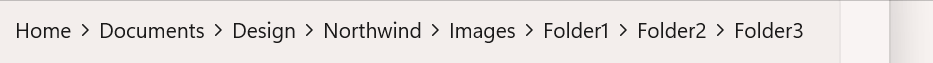
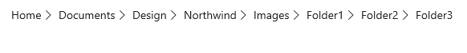
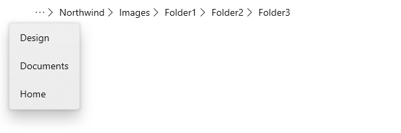
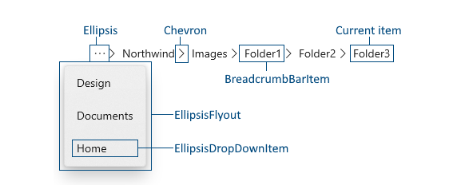
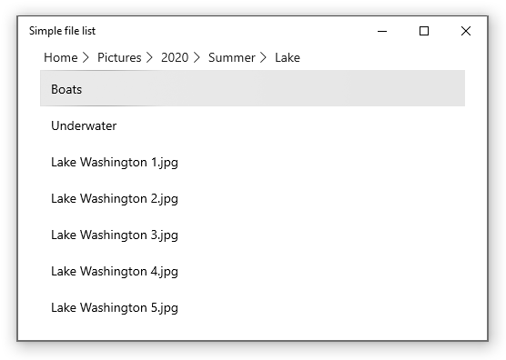

Breadcrumb Bar
A BreadcrumbBar provides the direct path of pages or folders to the current location. It is often used for situations where the user's navigation trail (in a file system or menu system) needs to be persistently visible and the user may need to go back to a previous location.

Is this the right control?
A breadcrumb bar lets a user keep track of their location when navigating through an app or folders, and lets them quickly jump back to a previous location in the path.
Use a BreadcrumbBar when the path taken to the current position is relevant. This UI is commonly used in folder managers and when a user may navigate many levels deep into an app.
Breadcrumb bar UI
The breadcrumb bar displays each node in a horizontal line, separated by chevrons.

If the app is resized so that there is not enough space to show all the nodes, the breadcrumbs collapse and an ellipsis replaces the leftmost nodes. Clicking the ellipsis opens a flyout to show the collapsed nodes.

Anatomy
The image below shows the parts of the BreadcrumbBar control. You can modify the appearance of some parts by using lightweight styling.

Recommendations
- Use a breadcrumb bar when you have many levels of navigation and expect users to be able to return to any previous level.
- Don't use a breadcrumb bar if you only have 2 possible levels of navigation. Simple back navigation is sufficient.
- Show the current location as the last item in the breadcrumb bar. However, you typically don't want to perform any navigation if the user clicks the current item. (If you want to let the user reload the current page or data, consider providing a dedicated 'reload' option.)
Create a breadcrumb bar
- Important APIs: BreadcrumbBar class
The WinUI 3 Gallery app includes interactive examples of most WinUI 3 controls, features, and functionality. Get the app from the Microsoft Store or get the source code on GitHub
This example shows how to create a breadcrumb bar with the default styling. You can place the breadcrumb bar anywhere in your app UI. You populate the breadcrumbs by setting the ItemsSource property. Here, it's set to an array of strings that are shown in the breadcrumb bar.
<BreadcrumbBar x:Name="BreadcrumbBar1"/>
BreadcrumbBar1.ItemsSource =
new string[] { "Home", "Documents", "Design", "Northwind", "Images", "Folder1", "Folder2", "Folder3" };
ItemsSource
The breadcrumb bar does not have an Items property, it only has an ItemsSource property. This means you can't populate the breadcrumbs in XAML or by adding them directly to an Items collection in code. Instead, you create a collection and connect the ItemsSource property to it in code or using data binding.
You can set the ItemsSource to a collection of any type of data to suit the needs of your app. The data items in the collection are used both to display the breadcrumb in the bar, and to navigate when an item in the breadcrumb bar is clicked. In the examples on this page, we create a simple struct (named Crumb) that contains a label to display in the breadcrumb bar and a data object that holds information used for navigation.
public readonly struct Crumb
{
public Crumb(String label, object data)
{
Label = label;
Data = data;
}
public string Label { get; }
public object Data { get; }
public override string ToString() => Label;
}
ItemTemplate
By default, the breadcrumb bar displays the string representation of each item in the collection. If the data items in your collection don't have an appropriate ToString override, you can use the ItemTemplate property to specify a data template that defines how the items are shown in the breadcrumb bar.
For example, if your breadcrumb collection was a list of StorageFolder objects, you could provide a data template and bind to the DisplayName property like this.
ObservableCollection<StorageFolder> Breadcrumbs =
new ObservableCollection<StorageFolder>();
<BreadcrumbBar x:Name="FolderBreadcrumbBar"
ItemsSource="{x:Bind Breadcrumbs}">
<BreadcrumbBar.ItemTemplate>
<DataTemplate x:DataType="StorageFolder">
<TextBlock Text="{x:Bind DisplayName}"/>
</DataTemplate>
</BreadcrumbBar.ItemTemplate>
</BreadcrumbBar>
ItemClicked
Handle the ItemClicked event to navigate to the item the user has clicked in the breadcrumb bar. The current location is typically shown as the last item in the breadcrumb bar, so you should include a check in your event handler if you don't want to reload the current location.
This example checks the Index to see whether the clicked Item is the last item in the collection, which is the current location. If it is, no navigation occurs.
// Breadcrumbs is set as BreadcrumbBar1.ItemsSource.
List<Crumb> Breadcrumbs = new List<Crumb>();
...
private void BreadcrumbBar1_ItemClicked(muxc.BreadcrumbBar sender, muxc.BreadcrumbBarItemClickedEventArgs args)
{
if (args.Index < Breadcrumbs.Count - 1)
{
var crumb = (Crumb)args.Item;
Frame.Navigate((Type)crumb.Data);
}
}
Lightweight styling
You can modify the default Style and ControlTemplate to give the control a unique appearance. See the Control Style and Template section of the BreadcrumbBar API docs for a list of the available theme resources. For more info, see the Light-weight styling section of the Styling controls article.
Code examples
This example shows how you could use a breadcrumb bar in a simple file explorer scenario. The list view shows the contents of the selected Pictures or Music library, and lets the user drill down into sub-folders. The breadcrumb bar is placed in the header of the list view, and shows the path to the current folder.

<Grid>
<ListView x:Name="FolderListView" Margin="24,0"
IsItemClickEnabled="True"
ItemClick="FolderListView_ItemClick">
<ListView.Header>
<BreadcrumbBar x:Name="FolderBreadcrumbBar"
ItemsSource="{x:Bind Breadcrumbs}"
ItemClicked="FolderBreadcrumbBar_ItemClicked">
</BreadcrumbBar>
</ListView.Header>
<ListView.ItemTemplate>
<DataTemplate>
<TextBlock Text="{Binding Name}"/>
</DataTemplate>
</ListView.ItemTemplate>
</ListView>
</Grid>
public sealed partial class MainPage : Page
{
List<IStorageItem> Items;
ObservableCollection<object> Breadcrumbs =
new ObservableCollection<object>();
public MainPage()
{
this.InitializeComponent();
InitializeView();
}
private void InitializeView()
{
// Start with Pictures and Music libraries.
Items = new List<IStorageItem>();
Items.Add(KnownFolders.PicturesLibrary);
Items.Add(KnownFolders.MusicLibrary);
FolderListView.ItemsSource = Items;
Breadcrumbs.Clear();
Breadcrumbs.Add(new Crumb("Home", null));
}
private async void FolderBreadcrumbBar_ItemClicked(muxc.BreadcrumbBar sender, muxc.BreadcrumbBarItemClickedEventArgs args)
{
// Don't process last index (current location)
if (args.Index < Breadcrumbs.Count - 1)
{
// Home is special case.
if (args.Index == 0)
{
InitializeView();
}
// Go back to the clicked item.
else
{
var crumb = (Crumb)args.Item;
await GetFolderItems((StorageFolder)crumb.Data);
// Remove breadcrumbs at the end until
// you get to the one that was clicked.
while (Breadcrumbs.Count > args.Index + 1)
{
Breadcrumbs.RemoveAt(Breadcrumbs.Count - 1);
}
}
}
}
private async void FolderListView_ItemClick(object sender, ItemClickEventArgs e)
{
// Ignore if a file is clicked.
// If a folder is clicked, drill down into it.
if (e.ClickedItem is StorageFolder)
{
StorageFolder folder = e.ClickedItem as StorageFolder;
await GetFolderItems(folder);
Breadcrumbs.Add(new Crumb(folder.DisplayName, folder));
}
}
private async Task GetFolderItems(StorageFolder folder)
{
IReadOnlyList<IStorageItem> itemsList = await folder.GetItemsAsync();
FolderListView.ItemsSource = itemsList;
}
}
public readonly struct Crumb
{
public Crumb(String label, object data)
{
Label = label;
Data = data;
}
public string Label { get; }
public object Data { get; }
public override string ToString() => Label;
}
UWP and WinUI 2
Important
The information and examples in this article are optimized for apps that use the Windows App SDK and WinUI 3, but are generally applicable to UWP apps that use WinUI 2. See the UWP API reference for platform specific information and examples.
This section contains information you need to use the control in a UWP or WinUI 2 app.
The BreadcrumbBar for UWP apps requires WinUI 2. For more info, including installation instructions, see WinUI 2. APIs for this control exist in the Microsoft.UI.Xaml.Controls namespace.
- WinUI 2 Apis: BreadcrumbBar class
- Open the WinUI 2 Gallery app and see the BreadcrumbBar in action. The WinUI 2 Gallery app includes interactive examples of most WinUI 2 controls, features, and functionality. Get the app from the Microsoft Store or get the source code on GitHub.
To use the code in this article with WinUI 2, use an alias in XAML (we use muxc) to represent the Windows UI Library APIs that are included in your project. See Get Started with WinUI 2 for more info.
xmlns:muxc="using:Microsoft.UI.Xaml.Controls"
<muxc:BreadcrumbBar />